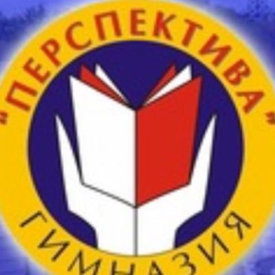
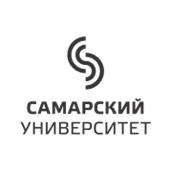

2020 – МБОУ «Гимназия Перспектива» г.о. Самара, среднее общее (с отличием)
2021 – АНО ВО «Университет Сириус», дополнительное образование по программе «Формальные методы дизайна и верификации программного обеспечения»
(2024) – Самарский Национальный исследовательский университет им. С.П. Королёва, высшее, бакалавриат, направление «Фундаментальная информатика и информационные технологии»
 